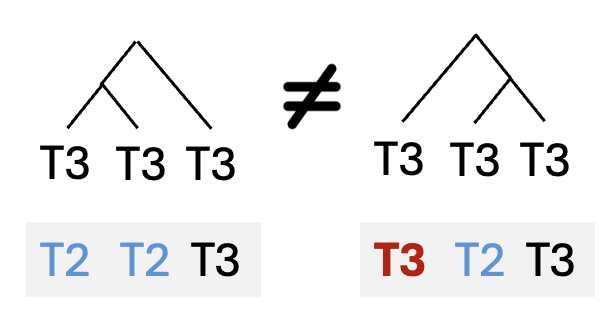

Modeling the acquisition of Mandarin Tone 3 sandhi from child-directed speech
Tone sandhi is regular but exception-laden in the input children actually hear. This project models how learners could acquire the rule while tolerating those exceptions, asking what kind of learning mechanism makes regularities recoverable from noisy data.